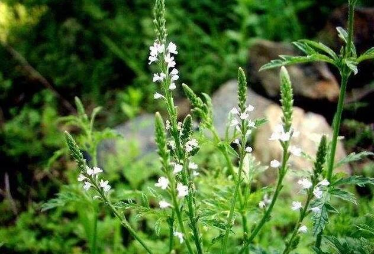

马鞭草的功效与作用
马鞭草为马鞭草科马鞭草属植物马鞭草之全草，以穗如鞭梢而得名。此草生于林边及旷野草地。我国大部分地区均有分布。现代研究证明，马鞭草含马鞭草苷、马鞭草醇、鞣质及挥发油。其针剂在控制疟疾症状和杀灭疟原虫方面有较好效果；其水及醇提取物，均有消炎和镇痛作用；其煎剂对金黄色葡萄球菌、福氏痢疾杆菌有抑制作用，对钩端螺旋体有杀灭作用。中医学上以全草入药，性微寒、味苦，功能破血通经、截疟，主治关节酸痛、跌打损伤、闭经痛经、疟疾等症状；根可以治赤白痢、疟疾。

马鞭草是什么
【中文名】马鞭草
【别名】 铁马鞭、紫顶龙芽草、野荆芥、马鞭、龙芽草、凤颈草、狗牙草、马鞭稍、小铁马鞭、顺捋草、蜻蜓草、退血草、铁马莲、疟马鞭、土荆芥、燕尾草、白马鞭、蜻蜓饭、狗咬草、铁扫帚。
【来源】 为马鞭草科植物马鞭草的地上部分。
【科属分类】马鞭草科
【考证】出自《名医别录》
【植物形态】 多年生草本，通常高30—120cm。茎上部方形，老后下部近圆形。叶对生，卵形至短圆形，长2—8cm，宽1—4cm，两面有粗毛，边缘有粗锯齿或缺刻，茎生叶无柄，多数3深裂，有时羽裂，裂片边缘有不整齐锯齿。穗状花序顶生或生于上部叶腋，开花时通常似马鞭，每花有1苞片，苞片比萼略短，外面有毛；花萼管状，5齿裂；花冠管状，淡紫色或蓝色，近2唇形；雄蕊4，二强；子房4室，每室1胚珠。熟时分裂为4个长圆形的小坚果。花期6—8月，果期7—11月。
【生态环境】生路旁、村边、田野、山坡。
【资源分布】分布于中南、西南及山西、陕西、甘肃、新疆、江苏、安徽、浙江、江西、福建。
【主产地】主产湖北 江苏 广西 贵州 福建 安徽 四川 河北。
【采收和储藏】采制 6—8月花开时时采割，除去杂质，晒干。
【炮制方法】除去残根及杂质，洗净，稍润，切段，晒干。
本站文章均来自互联网，仅供学习参考，如有侵犯您的版权，请邮箱联系我们删除！
 上一篇
上一篇